Unity-DOTween
目录
- 资源
- 01-DOTween动画插件介绍和导入
- 02-如何对变量进行动画
- 03-控制Cube和UI面板的动画
- 04-动画的快捷播放方式
- 05-动画的前放和倒放
- 06-From Tweens
- 07-动画的属性设置(动画曲线和事件函数)
- 08-动画的生命周期和生命周期函数
- 09-对话框文字动画
- 10-屏幕震动效果
- 11-颜色和透明度动画
- 12-学习DOTween的官方文档
- 13-动画的组件可视化创建方式
- 14-DOTweenPath路径编辑器的使用
资源
01-DOTween动画插件介绍和导入
从 Untiy Assetstore DOTween Pro | 可视化脚本 | Unity Asset Store 下载 DoTween 要 $15……去网上整个盗版的吧。
DOTween 官网，如果要详细学习，建议通读官网文档：
官网上显示 DOTween 业界领先！
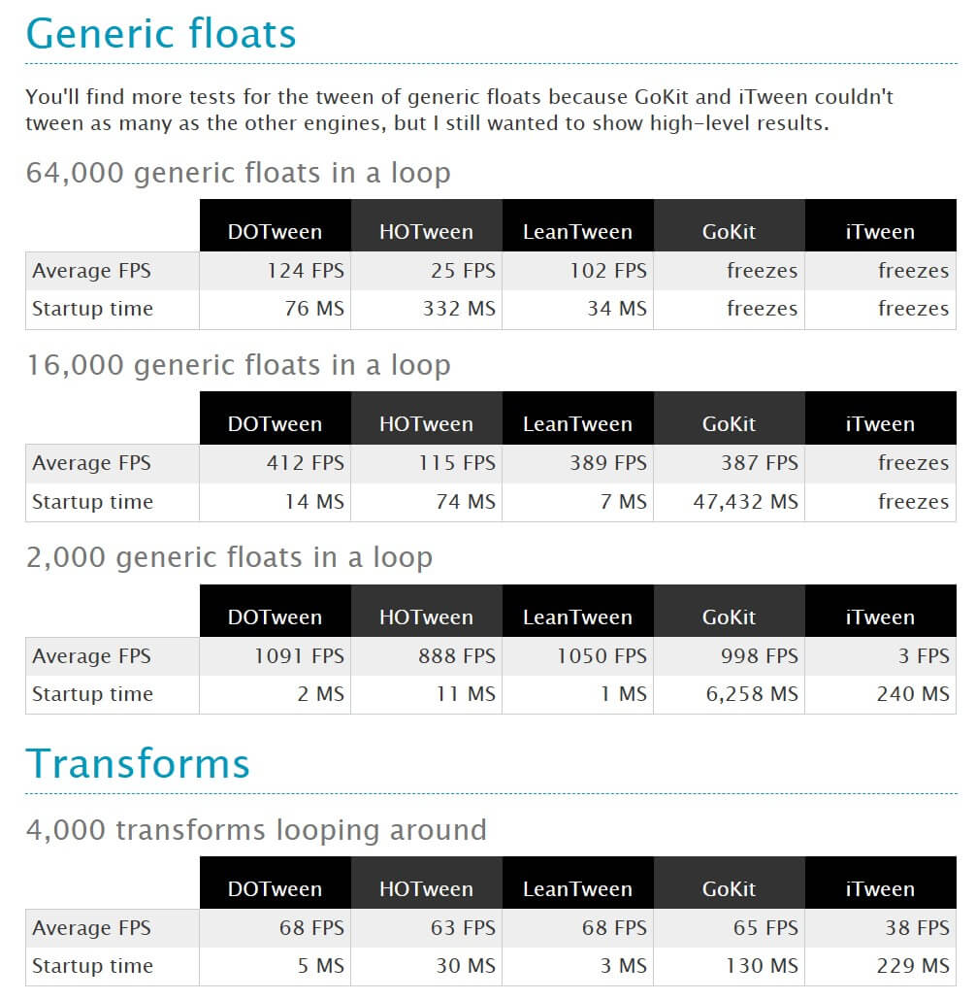
DOTween 可视作 HOTween 的 V2 版本。
02-如何对变量进行动画
场景里绑个类测试下：
|
DOTween.To() 方法是 DOTween 插件中的一个静态方法，用于创建一个动画序列。它接受四个参数：起始值 Getter、更新值 Setter、目标值和动画持续时间。
() => myValue是一个 Lambda 表达式，表示获取当前的 myValue 值作为动画的起始值。这个值将在动画开始时被记录下来。x => myValue = x也是一个 Lambda 表达式，表示将动画计算出的 x 值赋给 myValue。在动画执行的过程中，DOTween 将不断计算新的 x 值，并调用这个 Lambda 表达式来将其赋值给 myValue。new Vector3(10, 10, 10)表示动画的目标值。在这个例子中，目标值是一个三维向量 (Vector3)，具体数值为 (10, 10, 10)。2表示动画的持续时间，单位为秒。在这个例子中，动画将在2秒内从起始值过渡到目标值。
综上所述，这行代码的含义是创建一个以 myValue 作为起始值的动画，将 myValue 从起始值逐渐过渡到目标值 Vector3(10, 10, 10)，过渡时间为 2 秒。在动画过程中，myValue 将会不断更新，并且最终等于目标值。
开跑！这个值变化的速率是先快后慢的。
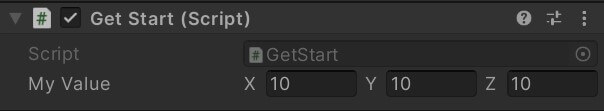
03-控制Cube和UI面板的动画
在 Update() 中，将 myValue 与 Cude Transform 绑定：
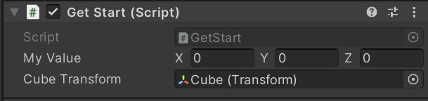
|
同理，对于 UI 面板，在 Update() 中，将 myValue 与 taskPanelTransform 绑定：
|
DOTween.To() 不仅适用于 Vector3，float 也是适用的：
|
04-动画的快捷播放方式
Ctrl + N 可以直接创建一个新场景，学到了。
设计一个按钮，按下后面板就移动到视图内：
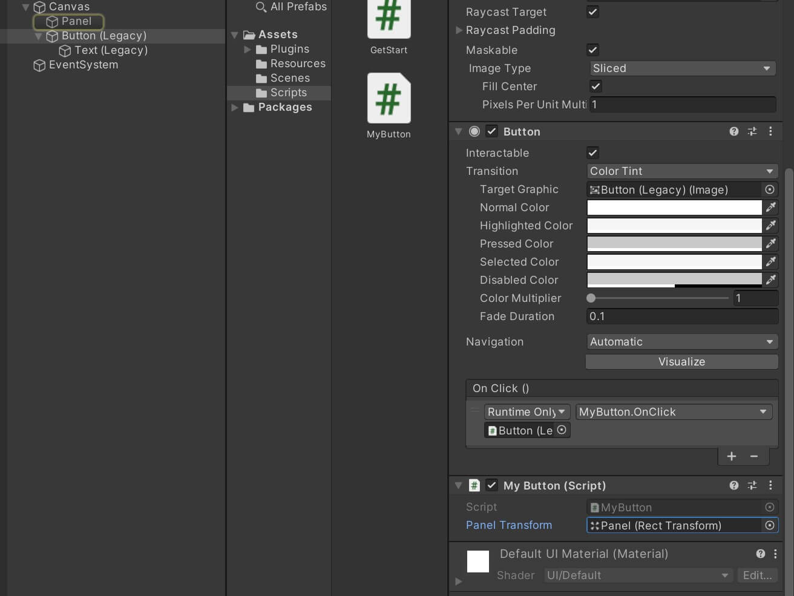
下述方法对 UI 不好使：
|
我这个修改局部坐标的好使：
|
05-动画的前放和倒放
panelTransform.DOPlayBackwards(); 可以让绑定在 panelTransform 上的动画倒放。
错误示范：
由于 默认动画完成后会被销毁 ，所以在动画播放完后是不能倒放的。
|
错误示范 2：
DOLocalMove() 会创建一个 Tweener 对象，将自动销毁设为 false。
但是每次按一次按钮都会创建一个动画对象，造成资源浪费。
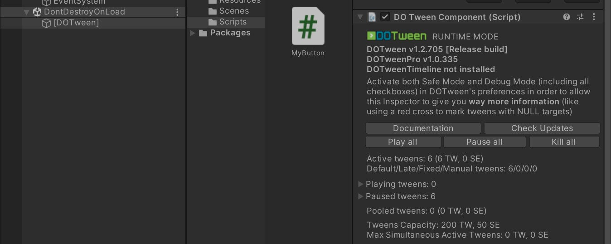
|
错误示范 3：
tweener.Play() 只会让动画播放一次。
|
正确示范：
DOPlayForward() 是正放，与 DOPlayBackwards() 相对应。
执行 panelTransform.DOPlayForward() 会执行这个对象上关联的所有动画。
|
06-From Tweens
给一个 Cube 对象绑定代码：
|
transform.DOMoveX(5, 3) 方法是 DOTween 插件的扩展方法，用于创建一个移动物体的动画序列。它接受两个参数：目标位置和动画持续时间。
5表示物体移动的目标位置。在这个例子中，目标位置是X轴上的坐标为5。3表示动画的持续时间，单位为秒。在这个例子中，动画将在3秒内完成物体从当前位置到目标位置的移动。
.From(true) 是 DOTween 链式调用中的一个方法，表示将动画的起始位置设置为目标位置，并且播放反转动画。这意味着物体将从目标位置开始沿着 X 轴反向移动至当前位置，然后再回到目标位置。
综上所述，这行代码的含义是创建一个物体移动的动画序列，让物体从当前位置开始沿着 X 轴移动到坐标为 5 的位置，移动时间为 3 秒，并且以目标位置为起点，播放反转动画使物体从目标位置返回当前位置。
07-动画的属性设置(动画曲线和事件函数)
|
这段代码使用了 DOTween 插件来创建一个移动物体的动画序列，并设置了一些额外的效果和回调函数。
transform.DOLocalMoveX(0, 2)是 DOTween 插件的扩展方法，用于创建一个将物体在本地坐标系下沿着 X 轴移动到指定位置的动画序列。它接受两个参数：目标位置和动画持续时间。0表示物体移动的目标位置。在这个例子中，目标位置是 X 轴上的坐标为 0。2表示动画的持续时间，单位为秒。在这个例子中，动画将在 2 秒内完成物体从当前位置到目标位置的移动。
tweener.SetEase(Ease.OutBack)是设置动画的缓动效果。Ease.OutBack表示应用一种反弹效果的缓动曲线，使得动画在结束时会有一个回弹的效果。tweener.SetLoops(2)是设置动画的循环次数。这里将动画循环播放 2 次，即播放完正向动画后再重新播放一次。tweener.OnComplete(OnTweenComplete)是设置动画完成时的回调函数。OnTweenComplete是一个自定义的回调函数，在动画完成时将被调用。
综上所述，这段代码的含义是创建一个物体移动的动画序列，让物体在本地坐标系下沿着 X 轴移动到坐标为 0 的位置，移动时间为 2 秒。动画应用反弹效果的缓动曲线，循环播放两次。当动画完成时，将调用自定义的回调函数 OnTweenComplete。
08-动画的生命周期和生命周期函数
A tween’s life
When you create a tween it will play automatically (unless you change the global defaultAutoPlay behaviour) until it completes all its loops.
When a tween is complete it is automatically killed (unless you change the global defaultAutoKill behaviour), which means you won’t be able to use it anymore.
If you want to reuse the same tween, just set its autoKill behaviour to FALSE (either by changing the global autoKill settings for all tweens, or by chaining SetAutoKill(false) to your tween).
If your tween’s target becomes NULL while a tween is playing errors might happen. You’ll have to either be careful or activate the safe mode
emmm 其它的还是叫我去看文档。
09-对话框文字动画
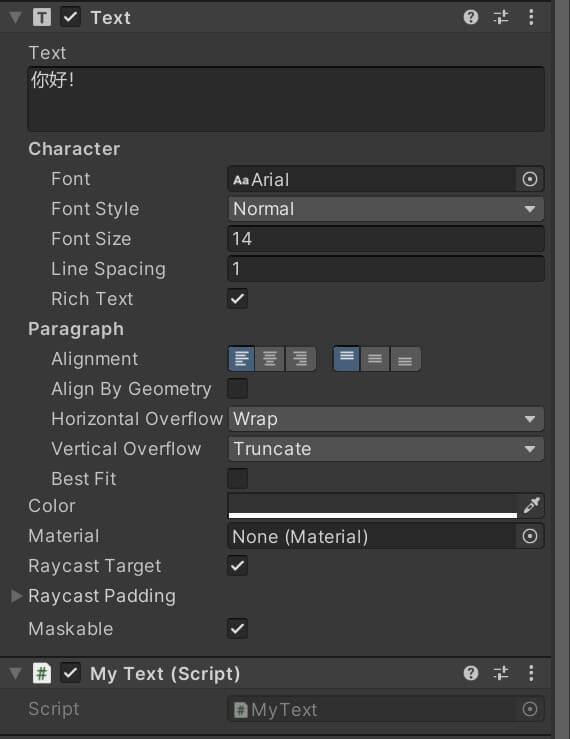
|
这段代码使用了 DOTween 插件来创建一个文本逐字显示的动画序列。
text = this.GetComponent<Text>()用于获取当前游戏对象（GameObject）上的 Text 组件。这样可以通过text变量来引用该组件。text.DOText("接下来，我们进入第二篇章", 5)是DOTween插件的扩展方法，用于创建一个逐字显示文本的动画序列。它接受两个参数：目标文本和动画持续时间。"接下来，我们进入第二篇章"是目标文本，即要逐字显示的文本内容。5是动画的持续时间，单位为秒。在这个例子中，文本将会在 5 秒内逐字显示完整。
综上所述，这段代码的含义是获取当前游戏对象上的 Text 组件并创建一个逐字显示文本的动画序列，将文本内容逐字显示为 “接下来，我们进入第二篇章”，并且动画持续时间为 5 秒。这样，在播放动画期间，文本将会逐字逐渐显示出来。
10-屏幕震动效果
给 Camera 添加一个类：
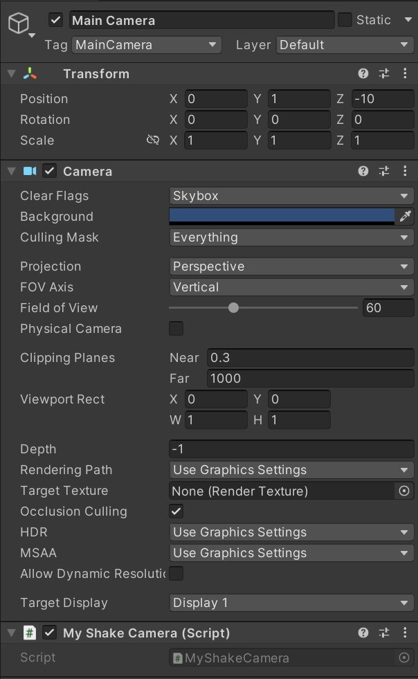
这段代码使用了 DOTween 插件来创建一个位置抖动的动画序列。
transform.DOShakePosition(10, new Vector3(1, 1, 0)) 是 DOTween 插件的扩展方法，用于创建一个物体位置抖动的动画序列。它接受两个参数：抖动的持续时间和抖动的强度向量。
10表示抖动的持续时间，单位为秒。在这个例子中，抖动将持续 10 秒钟。new Vector3(1, 1, 0)表示抖动的强度向量。在这个例子中，物体在X轴和Y轴上的位置会以幅度为 1 的力度进行抖动，而在 Z 轴上的位置保持不变。
综上所述，这段代码的含义是创建一个位置抖动的动画序列，让物体在 10 秒内以幅度为 1 的力度在 X 轴和 Y 轴上进行抖动，而 Z 轴的位置保持不变。执行该动画后，物体将在指定的持续时间内抖动。
11-颜色和透明度动画
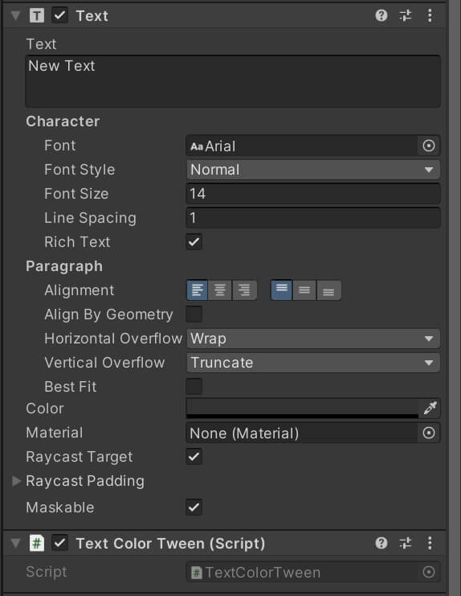
|
text.DOColor(Color.red, 2);这段代码使用了 DOTween 插件来创建一个文本颜色变化的动画序列。
text.DOColor(Color.red, 2)是 DOTween 插件的扩展方法，用于创建一个文本颜色变化的动画序列。它接受两个参数：目标颜色和动画持续时间。Color.red表示目标颜色，即要将文本变化为红色。2表示动画的持续时间，单位为秒。在这个例子中，文本的颜色将在 2 秒内逐渐变化为红色。
综上所述，这段代码的含义是获取当前游戏对象上的 Text 组件，并创建一个文本颜色变化的动画序列，将文本的颜色逐渐变化为红色，并且动画持续时间为 2 秒。在执行该动画后，文本的颜色将会在指定的持续时间内渐变为红色。
text.DOFade(1, 3);这段代码使用了 DOTween 插件来创建一个文本透明度渐变的动画序列。
text.DOFade(1, 3)是 DOTween 插件的扩展方法，用于创建一个文本透明度渐变的动画序列。它接受两个参数：目标透明度和动画持续时间。1表示目标透明度，即将文本的透明度渐变为完全不透明（不可见）。3表示动画的持续时间，单位为秒。在这个例子中，文本的透明度将在 3 秒内逐渐渐变为完全不透明。
综上所述，这段代码的含义是对获取到的 Text 组件创建一个文本透明度渐变的动画序列，将文本的透明度逐渐渐变为完全不透明，而动画的持续时间为 3 秒。执行该动画后，文本的透明度将会在指定的持续时间内逐渐增加，最终变为完全不透明。
12-学习DOTween的官方文档
可以读一读，看看 DOTween 都支持哪些功能。
13-动画的组件可视化创建方式
DOTween Animation 类，通过可视化的方式创建一个类。
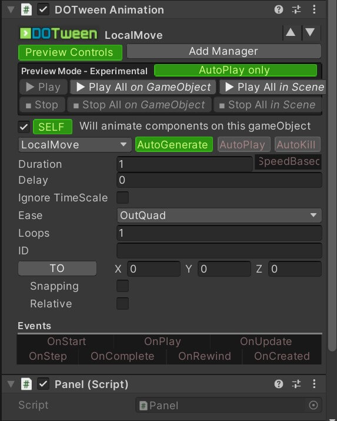
同时再写一个类控制这个动画的逻辑：
|
14-DOTweenPath路径编辑器的使用
介绍了 DOTween Path 类，让物体沿着某个路径进行移动：
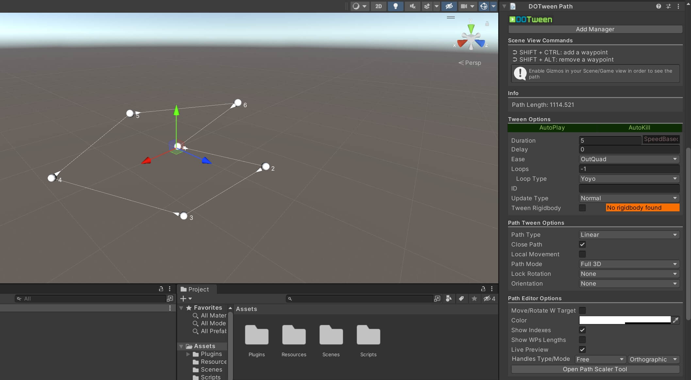
也可以调用其中的函数：
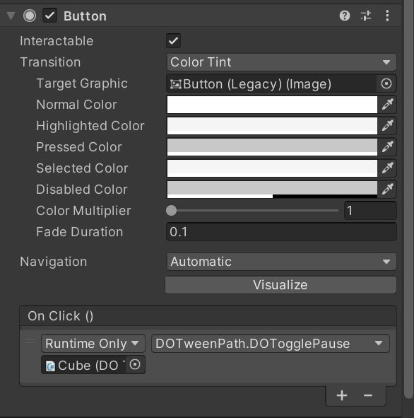